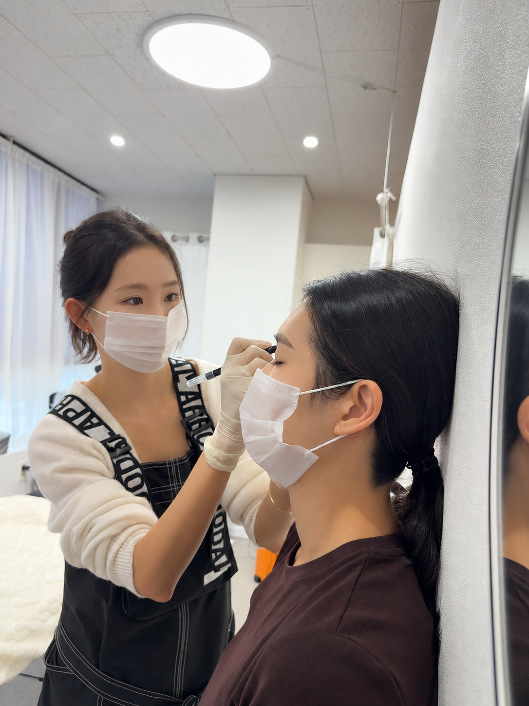
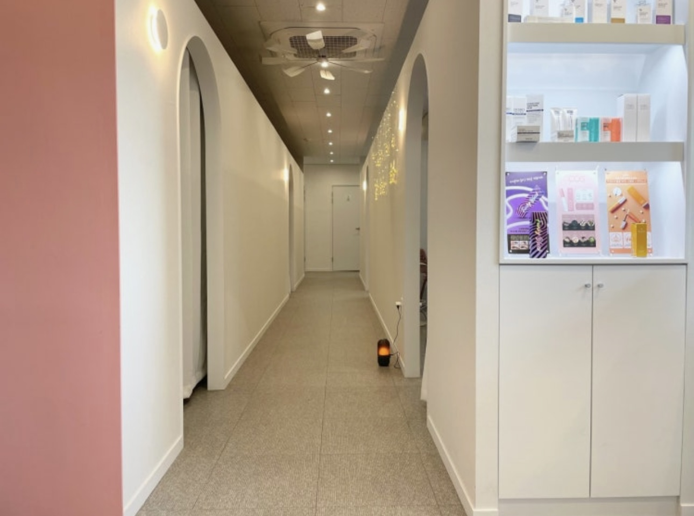

“아침마다 눈썹 그리는 게
은근히 오래 걸려요.”
양쪽 모양을 맞추고, 지우고, 다시 그리는 아침. 평소 어떤 부분이 가장 불편했는지 들려주세요.
SEOSAN · EPLE BROW STUDIO
진해질까, 내 얼굴에 어울릴까 고민된다면.
서산 이플에서 원하는 모양과 걱정부터 이야기해요.
DOES THIS SOUND LIKE YOU?
양쪽 모양을 맞추고, 지우고, 다시 그리는 아침. 평소 어떤 부분이 가장 불편했는지 들려주세요.
자연스러웠으면 하는 마음, 시술 직후의 진하기에 대한 걱정까지. 원하는 느낌부터 함께 이야기해요.
기존 잔흔이 있다면 현재 상태를 바탕으로 시술 가능 여부와 디자인 방향을 개별 상담합니다.
어떤 눈썹을 원하는지, 아직 정확히 몰라도 괜찮아요.
내 고민부터 이야기하기 ↗THE ART OF NATURAL BROWS
원하는 느낌과 가까운 사례를 찾아보세요.
사진을 누르면 더 크게 볼 수 있어요.
개인별 피부와 기존 눈썹 상태에 따라 결과는 달라질 수 있습니다.
마음에 드는 사례와 평소의 고민을 상담에서 함께 이야기해요.
WORDS FROM REAL VISITS
고객이 직접 남긴 상담과 디자인 경험.
실제 후기의 목소리로 확인해 보세요.
“상담을 굉장히 꼼꼼하게 잘 해주셔서 마음에 들었고, 딱히 원하는 디자인이 없어서 자연스러운 스타일의 눈썹으로만 부탁드렸는데 제 얼굴과 어울리는 스타일 찾아서 눈썹 디자인 해주셨습니다!”
“눈썹 주변에서 다 잘됐대요 다른 지역까지 가서 여러번 해봤는데 지금까지 문신한중에 제일 맘에 들어요!”
개인의 경험을 담은 후기이며, 동일한 결과를 보장하지 않습니다. 작성자의 이름과 프로필은 표시하지 않았습니다.
네이버 플레이스에서 후기 더 보기 ↗THE EPLE APPROACH
좋아하는 눈썹 모양, 평소 메이크업과 생활 습관, 그동안의 고민을 바탕으로 얼굴에 어울리는 디자인 방향을 상담합니다. 장유림 원장이 1인 예약제로 개별 상담과 시술을 진행합니다.
상담에서 나눌 이야기 · 선호하는 모양 / 원하는 인상 / 기존 잔흔이플의 콤보눈썹은 엠보 방식 대신 머신으로 결을 표현하고, 쉐도우 기법으로 음영을 더합니다. 자연눈썹·콤보눈썹·쉐도우눈썹 중 내 눈썹 상태와 원하는 분위기에 맞는 방향을 상담해요.
실제 디자인 사례 살펴보기 ↓깊고 진하게 색을 넣기 위해 무리하게 시술하지 않는 방향을 지향합니다. 기존 잔흔이 있거나 진하기가 걱정된다면 상담에서 먼저 이야기해 주세요.
피부와 기존 눈썹 상태에 따라 가능한 디자인과 결과는 달라질 수 있습니다.
Every detail, with care.MEET YOUR DESIGNER
좋아하는 모양도, 편안한 분위기도
사람마다 다르니까요.
평소의 메이크업, 원하는 인상, 작은 고민까지.
어떤 모습이 나다운지 함께 이야기하는 시간에서
디자인은 시작됩니다.
피부미용과 전공 · 반영구 4년차
시술 직후뿐 아니라 시간이 지난 뒤의 모습까지 고려합니다. 깊고 진하게 색을 넣기 위해 무리하기보다, 자연스럽고 얼굴에 어울리는 디자인을 지향합니다.
내 눈썹 고민 이야기하기 ↗A LITTLE CARE, EVERY STEP
무엇을 물어봐야 할지 몰라도, 고민 하나부터 이야기해 주세요.
궁금한 점은 카카오로,
방문 예약은 네이버로.
선호하는 모양과 기존 잔흔,
진하기에 대한 고민을 나눠요.
디자인 방향과 적용 가격,
리터치 조건을 확인해요.
A LITTLE GIFT FOR YOU
자연눈썹 · 콤보눈썹 · 쉐도우눈썹
내 눈썹과 원하는 분위기에 맞춰 상담해요.
이플의 콤보눈썹은 엠보 방식 대신 머신으로 결을 표현하고, 쉐도우 기법으로 음영을 더해 자연스러운 눈썹을 지향합니다.
기존 가격 180,000원
150,000원이벤트가
리터치와 재방문 할인은 별도 항목입니다. 예약 전 적용 조건과 최종 결제 금액을 상담으로 확인해 주세요.
15만 원 이벤트 상담 ↗BEFORE YOUR VISIT
처음 시술을 고민할 때도,
기존 잔흔이 신경 쓰일 때도 편하게 물어보세요.
기존 잔흔이 있는 경우 현재 상태를 바탕으로 시술 가능 여부와 디자인 방향을 상담합니다. 모든 잔흔의 커버를 보장하지 않으며, 상담에서 개별 안내드립니다.
평소 선호하는 눈썹 모양과 생활 습관, 그동안 고민했던 부분을 듣고 얼굴에 어울리는 디자인 방향을 함께 상담합니다.
통증에 대한 걱정도 상담에서 편하게 이야기해 주세요. 느끼는 정도에는 개인차가 있어 통증이 없다고 약속드리기보다는 개개인의 궁금한 점을 상담합니다.
원하는 느낌과 시술 직후 진하기에 대한 고민을 먼저 듣습니다. 깊고 진하게 색을 넣기 위해 무리하지 않고, 이후 남는 모습까지 고려하는 방향을 지향합니다.
기존 눈썹 상태와 원하는 분위기에 따라 디자인 방향을 상담합니다. 콤보눈썹은 머신으로 결을 표현하고 쉐도우 기법으로 음영을 더하는 방식으로 진행합니다.
눈썹 반영구는 기존 180,000원에서 이벤트가 150,000원으로 안내하고 있습니다. 적용 기법, 기간·인원, 리뷰 조건, 리터치 포함 여부는 예약 전 확인해 주세요. 6개월 이내 재방문 50% 할인은 기준 금액과 기간 산정 기준을 별도로 확인해 주세요.
STAY A LITTLE, FEEL AT EASE
부드러운 빛과 편안한 공간.
이플에서 만나요.

YOUR BEAUTY, YOUR WAY
서산 예천4로 29, 2층 · 매일 10:00–22:00 · 장유림 원장 1인 예약제